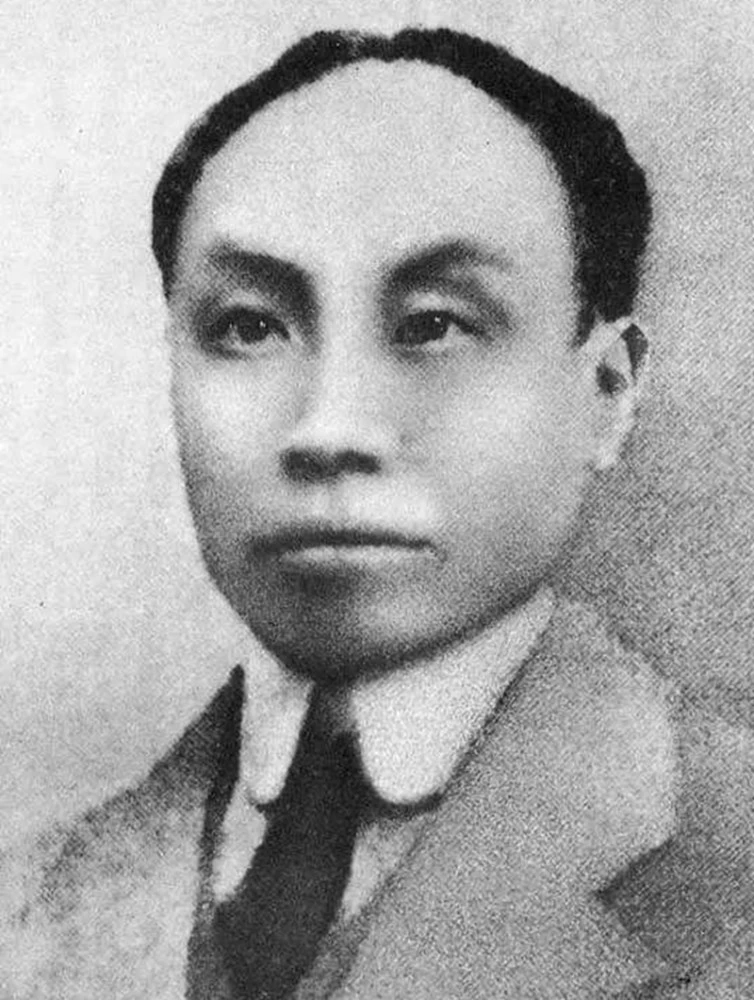

Glossary
Historical Events
XinHai Revolution (1911)
The XinHai Revolution of 1911, or Revolution of 1911, was a successful revolt against the Qing Dynasty that took place from October 10, 1911, to February 12, 1912. The revolution led to the establishment of the Republic of China (ROC) in 1911-1912. The cause of the revolution included the corruption of the Qing dynasty and subjugation of the Western and Japanese in China.
The First Opium War (1840- 1842) marks the start of Modern Chinese history. The treaties, such as the Treaty of Nanjing (August 29, 1842), from this period and on, have caused many changes to take place in China’s society. The destruction of China’s land and power led to China’s loss of political independence, which led to the dissatisfaction of the Chinese people. Another factor that started the XinHai Revolution was the WuChang Uprising (武昌起义) that took place in Wuchang, Hubei, China on October 10, 1911.
CCP Formation (1921)
The Chinese Communist Party (CCP) was founded on July 23, 1921 by Chen Duxiu and Li Dazhao at the Shanghai French Concession. The CCP was founded in the Shanghai French concession building. The flag's red background symbolizes the Chinese Communist Revolution. The hammer and sickle, or "☭", represented "a union between agricultural and industrial workers".
Northern Expedition (1926)
a military campaign launched by KMT. The Northern Expedition (国民革命军北伐) was a military campaign by the Nationalists started from July 9, 1926 to 1928 to unify China after the Xinhai Revolution.
Shanghai Massacre (1926)
The Shanghai Massacre, known as the April 12 Purge, was a violent suppression to the Chinese Communist Party by Chiang Kai-Shek and his supporters in the KMT. It is unclear how many people was killed; some say 5000 people was killed, while others claim up to 10,000 people was killed.
Long March (1934)
The Long March was a journey, a retreat from the KMT, that started on October 16, 1934, and lasted 1 year, 6 days. This march solidified Mao as chairman. The Long March later became known as a symbol of heroism of the CCP, as survivors faced hardships such as freezing and starving.
Xi'An Incident (1936)
During December 12-25 of 1936, Generalissimo Chiang Kai-Shek was captured by two of his generals. Those who accompanied Chiang was arrested by Yang HuCheng's troops, and Chiang was arrested by Zhang XueLiang's troops. After oral acceptance of the proposal of negotiating with the Communists to fight the Japanese, Zhang was later imprisoned throughout the war. In 1949, Chiang secretly ordered the execution of Yang.
Chinese Civil War
The Chinese Civil war was a period of conflicts between the Chinese Nationalists and Communists that ended in 1949, when Mao ZeDong established the PRC and when Chiang Kai-Shek retreated to Taiwan. The period from 1927 to 1937 was known as the Ten-Year Civil War (十年内战). Notable events during this period include the Communist Party's uprising in Nanchang against the Nationalist government in Wuhan on August 1, 1927.
Also referred to Civil War of the Nationalists and Communists (国共内战), the Chinese Civil War is a war that broke out within China’s borders between the two major political parties, the Chinese Kuomintang (KMT/GMD) and the Chinese Communist Party (CCP), and their armed forces for national power. The Civil War ended with the KMT’s retreat to Taiwan. In a broad sense, the Chinese Civil War refers to a long-term war that occurred in China from the end of the 1920s to the end of the 1940s, and it is also the largest-scaled civil war in modern history.
The Chinese Civil War is roughly divided into two stages: the Civil War from 1927 to 1937 the first stage, and from June 1946 to September 1949 divided as the second stage. This war is involved two parties: the KMT (fought by the National Revolutionary Army (国民革命军) and National Army of the Republic of China (中华民国国军)) and the CCP (the first stage fought by the Chinese Workers' and Peasants' Red Army (中国工农红军), the second stage fought by the People’s Liberation Army (中国人民解放军)).
Second Sino-Japanese War (1937–1945)
The Second Sino-Japanese War, also known as the Eight-Year War of Anti-Japanese Resistance （八年抗战), was a military conflict waged mainly between the Empire of Japan and the Republic of China (ROC). During the war, Chiang Kai-Shek (Jiang JieShi) viewed the Chinese Communists as a greater threat, as opposed to the Japanese invasion of Manchuria. After the Xi'An Incident in December 1936, Chiang agreed to work with the CCP. After the war ended with the Japanese surrender in 1945, the Chinese Civil War started again.
228 Incident (1949)
A massacre that was suppressed by Chen Yi (陳儀) and Chiang Kai-Shek of the KMT. This event was followed by the White Terror 2 years later.
Taiwan Strait Crises
Started in 1954. The Taiwan Strait Crises happened when the PRC bombed several islands controlled by the ROC.
Project National Glory (Guo Guang)
An attempt to reconquer mainland China was planned by Jiang. The project was established on April 1, 1961, and the goal was to use large-scale invasion. However, the plan lacked support from the U.S. and the plan required more forces than the KMT had.
Cultural Revolution
Started from 1966 and ended in 1976, when Mao ZeDong passed away. Books that the CCP were against was burned.
The Chinese Cultural Revolution, shortened for the Great Proletarian Cultural Revolution (无产阶级文化大革命), taking place from May 1966 to October 1976, is a revolution initiated by the CCP leaders mistakenly, which brought serious disaster to the party, the country, and the people of all ethnic groups in China.
By launching the "Cultural Revolution", the main goal was to prevent the restoration of capitalism and to seek China's way of building socialism. As the leader of a ruling proletarian party, the CCP, Mao Zedong constantly observed the real-life problems of the emerging socialist society after the establishment of the PRC in 1949. Corruption, privilege, bureaucracy, and other occurrences in China are constantly explored and fought tirelessly. Civil strife was led by an unclear understanding of the laws of socialist construction and development.
Project 571
Project 571 was a plot that planned to assassinate Mao ZeDong. The plan failed.
Historical Terms
Qing Dynasty
Also known as the ManChu Dynasty. This dynasty was the last imperial dynasty of China and was overthrown by revolutionaries in 1911.
Marxism
In simple terms, Marxism is a political and economic theory where a society has no classes named after Karl Marx.
People's Republic of China (PRC)
Founded on October 1, 1949 by Chinese Communist Mao ZeDong.
The People’s Republic of China (中华人民共和国), shortened “China (中国)”, was established on October 1, 1949. China is a socialist country under the people's democratic dictatorship led by the working class and based on the alliance of workers and peasants. With the five-golden-star red flag as the national flag, the "March of the Volunteers" (义勇军进行曲) as the national anthem, and the national emblem as the national flag, the common language spoken is Putonghua (普通话) and written language is standard Chinese characters (Simplified Chinese). With the capital located in Beijing, China is a unified multi-ethnic country with the Han nationality as the main body and 55 other ethnic groups.
Republic of China (ROC)
Founded by Sun Yat-sen (Sun ZhongShan/ 孙中山) in 1912 after the XinHai Revolution (1911).
The ROC, or modern Taiwan, 台湾 in Simplified Chinese (ROC/ 中华民国 (1912- )), is located in East Asia, and is the country name and era name of China from the fall of the Qing Dynasty to the founding of the People's Republic of China in 1949. The Republic of China is one of the first democratic republics in Asia established after the 1911 Revolution (Xinhai).
After the outbreak of the XinHai Revolution in 1911, the revolutionary party established a temporary government in Nanjing, and representatives of the provinces elected Sun Yat-Sen (Sun ZhongShan) as the provisional president. In January 1912, the Republic of China was officially established. During this time, the Beiyang forces, headed by Yuan Shikai (袁世凱), ruled China. After the collapse of the Beiyang government, the political situation was relatively turbulent, and Sun Yat-sen went south to Guangzhou. After the founding of the Communist Party of China in 1921, Sun Yat-sen promoted the reorganization of the Kuomintang (KMT) in 1924, the KMT carried out the Northern Expedition (led by Chiang Kai-Shek after Sun’s death in 1925), and overthrew the rule of the Beiyang warlords. After Chiang Kai-shek (Jiang JieShi) launched the April 12 counter-revolutionary coup in 1927, he established the National Government in Nanjing (南京市). During the nationwide Anti-Japanese War (Second Sino-Japanese War), when the CCP allied with the KMT, the Nationalist government (ROC) took Chongqing as its capital. In 1949, under the leadership of the Communist Party of China, the Chinese people overthrew the Nanjing National Government and established the People's Republic of China in October.
Kuomintang (KMT, Guo Min Dang)

Political party in the ROC, founded in November 24, 1894, Shanghai, China.
Red Army (Chinese Workers' and Peasants' Red Army)
The Red Army (中国工农红军), initially known as the People's Liberation Army (中国人民解放军), fought the Chinese Nationalists from 1927 to 1937. The army also fought against the Japanese during the Second Sino-Japanese War of 1937–1945 with the KMT during the Second United Front.
Eighth Route Army (18th Group Army of the National Revolutionary Army of the ROC)

The Eighth Route Army, or Ba Lu Army, was an army commanded under Zhu De (朱德) of the Chinese Communist Party. The Eighth Route was the larger of the two major Chinese communist forces that fought the Japanese in the Second Sino-Japanese War from 1937 to 1945.
Gang of Four (四人帮)
Led by Jing Qing, Mao ZeDong's last wife, the Gang of Four was later arrested and charged with treasonous crimes after Mao's death in 1976. It remains unclear how many decisions the Gang of Four participated in during the Mao era.
Historical Figures
Yuan ShiKai (袁世凯)
Yuan ShiKai, former president of the Republic of China (March 22, 1916 – June 6, 1916), was a military and government official who gained power during the late Qing dynasty and ended the Qing rule of China in 1912. He became the Emperor of China, attempting to restore the hereditary monarchy.
Sun Yat-Sen (孙中山)
Sun Yat-Sen was the founder of Kuomintang, and known as the father of modern China. Sun has got the name "Yat-Sen (逸仙)" during his time in Hong Kong. His brother-in-law was Chiang Kai-Shek. Sun is considered one of the most prominent leaders of the XinHai Revolution in 1911. When Sun Yat-Sen died on March 12, 1925, in BeiJing, Chiang Kai-Shek became his successor for the KMT.
Zhou EnLai (周恩来)
Zhou served under Mao ZeDong. Born into a gentry family in 1898, died in 1976. From 1937 to 1943, Zhou was the CCP’s chief representative to the Nationalist government. He played a significant role in helping forming the CCP and growing the Chinese economy.
Zhou EnLai (March 5, 1898 - January 6, 1976), “word” Xiang Yu (翔宇), also have named 飞飞, 伍豪, 少山, 冠生, etc. Zhou was born in Huai An, Jiang Su. In 1921, Zhou joined the Chinese Communist Party (CCP); he was a follower of marxism, a revolutionist, politician, military, diplomat, and one of the main leaders of the CCP. He was also one of the founding fathers of the People's Republic of China (PRC), and an important member of the first generation of the CCP’s central leadership with Comrade Mao Zedong as chairman. On January 8, 1976, Zhou passed away in BeiJing. Due to his diligent work, strict self-discipline, and care for the citizens, he is called "the people's good prime minister".
Chen DuXiu (陈独秀)
 Chen was the co-founder of the CCP in 1921. Chen DuXiu played a major role in the XinHai Revolution of 1911 and in the May Fourth Movement.
Chen was born on October 9, 1879 (passed away on May 27, 1942 in Jiangjin, a town west of Chongqing) in An Hui (Huaining County, Anqing, 安徽); he lost his father since childhood and practiced the Four Books Five Classics with his grandfather. In 1896, Chen passed the exam as a scholar but failed the Jiangnan Township Exam the following year. At the age of 18, he wrote an article titled "On the Situation of the Yangtze River". In 1897, he entered the "Chinese and Western Qiushi Academy" in Hangzhou to study. In 1920, Chen established the CPC initiating group in Shanghai to carry out party building activities. In July 1921, at the First National Congress of the Communist Party of China held in ShangHai, he was elected Secretary of the Central Bureau. In 1925, he led the May 30th Movement.
Peng DeHuai (彭德怀)

Peng DeHuai, or Peng DeHua (birth name), was a military leader and member of the CCP. Mao ZeDong and Peng DeHuai's relationship after the death of Mao AnYing is unclear. At the Lushan Conference in 1959, Peng was labeled by Mao ZeDong as a leader of an "anti-Party clique", which removed Peng's power in the CCP.
Lin Biao (林彪)
Lin Biao played a significant role in the Cultural Revolution. Died in 1971 after the plot of Project 571 was discovered.
About Site
Works Cited
MLA formatted works cited page is linked from this github repository's readme, also embedded below.
Translations
Translations from Chinese to English (in the website) are done by me, without translating tools. I attempted to translate the media scripts to English to the best of my ability. Some sentences may feel off when reading it.
Codes
Source code by me can be found in the files in this repository. The timeline was inspired by this! I used Repl.it to make this site, then uploaded the individual files to github.
This site is hosted by GitHub Pages and Vercel.
Please visit the repository here on GitHub to see the source code!